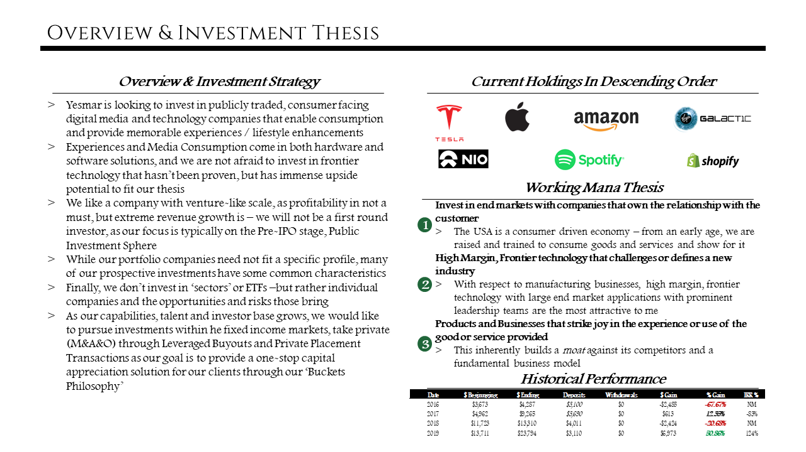

Mandate: Provide exceptional returns through investing in publicly traded growth technology stocks for long-term capital appreciation and short-term gains when appropriate through event-driven strategies.
April-18-2020

Virgin Galactic Is Speaheading Commercial Space Travel For The Masses
April-18-2020

Virgin Galactic is an interesting play because they fit right into this lens I'm trying to analyze industrial companies in: High Margin, Technologically Advanced, American Manufacturing with prominent leadership – Virgin has all of this. This business is reminiscent of Tesla in the early days. We entered this investment around February and have been taking hits from their speculation as well as the damper from the CoronaVirus.
With respect to their TAM and opening this up to the masses, I feel there is a fundamental business of selling the space experience here. $250k is not that much to spend on a one in a lifetime event like this. Imagine a Kardashian live streaming from space, or someone live streaming the first trade from space, the first MMA fight from space etc..
At the core, Virgin is an entertainment company and Branson is using Space as a platform so sell experiences.
Real-Time Vertical Integration Enables Extreme Moats, With Monopolistic-Like Market Structures
April-17-2020

Facebook, the largest social media platform has acquired, or outright copied competing platforms, as you can see below:
- April 2012: Facebook Acquired Instagram to appeal to a younger crowd
- To Snap’s demise, Evan Spiegel reportedly turned down an acquisition offer from Facebook in late 2013
- August 2016 rolls around and Instagram adds Stories to the platform, Snapchat’s defining feature
- In the mean time, Persicope was founded in March 2015, a platform for users to live broadcast themselves to people who tune into their periscopes
- Facebook introduced Instagram Live Stories in November 2016 – which was Persicope’s defining feature: a smaller company again had their defining feature stolen by Facebook – not to say that any company ‘owns’ a piece of software – it’s software for god’s sake
- VSCO has failed to scale as people truly like ‘likes’ and numbers on their impressions – is there room for a platform to scale without the use of likes and followers? TechCrunch cites that in the midst of the CoronaVirus crisis VSCO has laid off 30% of their workforce
However, It seems like FinTech startups have rose up in the face of incumbents (Cash App’s rise because they serve the underserved areas/segments?! – a snippet from Jack Dorsey on the Joe Rogan Podcast) – all this success in relation to Venmo, ebay, Paypal, VISA, etc… Fintech might be a new vertical to analyze...
Feburary 2020 Market Update: COVID-19
Feburary-29-2020

Feburary 29th, 2020: Markets Enter Correction Territory, as Supply Chains are Shocked from Corona Virus Outbreaks, however over the long term, The Status Quo of 'Designed in California, Made In China' will remain. This presents a very unique buying opportunity for name brands.